参加が「くじ」ではなく「押し付け」
役員は立候補ではなくジャンケンや消去法で決まる。選ばれた側に正統性の実感がなく、選んだ側に感謝もない。動機と代表性が最初から壊れています。
世界と日本には、「もめて当然」のテーマをうまく扱えている場所があります。この図鑑は、そうした事例を標本として採集し、成立の条件を観察するためのものです。
読み方は簡単です。うまくいっている合意形成には、共通する5つの条件があります。各標本カードには、満たしている条件が朱印で押してあります。
押印3つ以上で「持続可能な合意形成」の目安。あなたの組織は、いくつ押せますか?PTAや自治会が苦しいのは、参加者の善意が足りないからではありません。次の3つの構造が揃っているからです。
役員は立候補ではなくジャンケンや消去法で決まる。選ばれた側に正統性の実感がなく、選んだ側に感謝もない。動機と代表性が最初から壊れています。
アンケートや意見箱はあるが、出した意見がどう扱われたか誰も答えない。「言っても無駄」の学習が積み重なり、沈黙が最適戦略になります。
企画も調整も実行も責任も一括で背負わされる。「引き受けたら最後」の構造が、言い出しっぺが損をする文化を再生産します。
世界の成功事例を横断すると、次の5条件のうち3つ以上を満たしているものがほとんどです。三点セットのちょうど裏返しになっていることに注目してください。
参加者をくじで選ぶ。「声の大きい人」でも「押し付けられた人」でもない参加は、動機と代表性を同時に生む。
提言を受けた側が「採用/不採用と理由」を必ず返すと、始める前に約束する。言いっぱなしにさせない。
市民に委ねるのは最終決定ではなく、選択肢の絞り込みや優先順位づけ。責任の背負わせすぎを防ぐ。
全員合意主義を捨て、要件緩和や制度の肩代わりで「反対し続けるコスト > 参加するコスト」の構造を作る。
意見の分布や不満を先に見えるようにする。対立が顕在化した「後」の熟議は、切実さと正統性を帯びる。
領域ごとに採集した12の標本です。押されている朱印(=満たしている条件)を見比べてみてください。
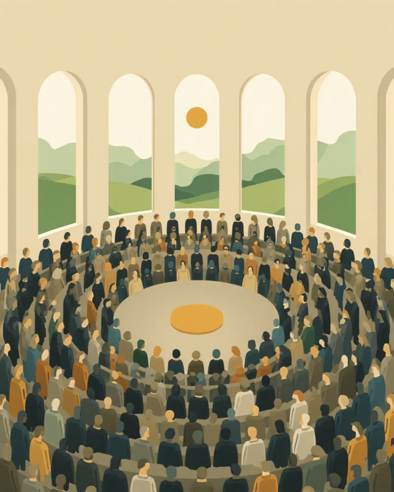
アイルランド|2016〜
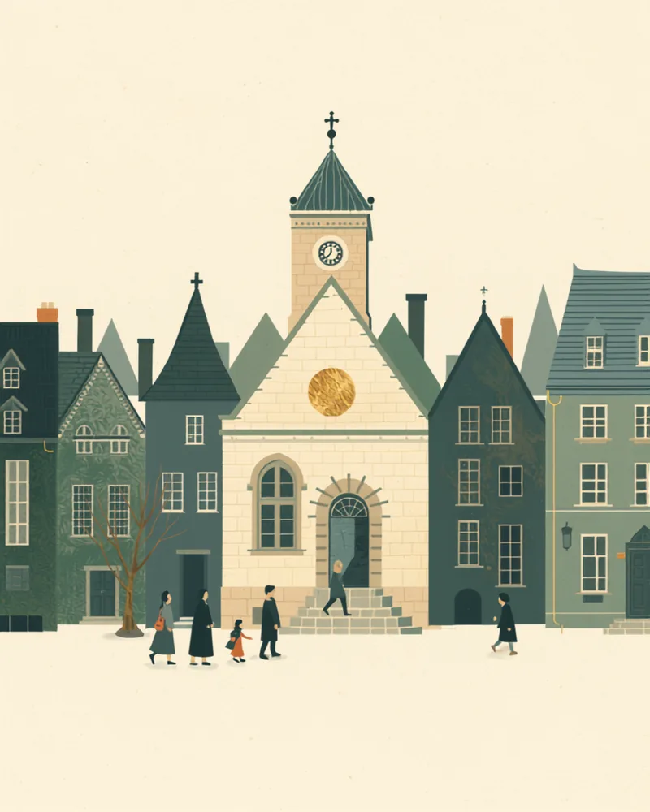
ベルギー・オストベルギー|2019〜
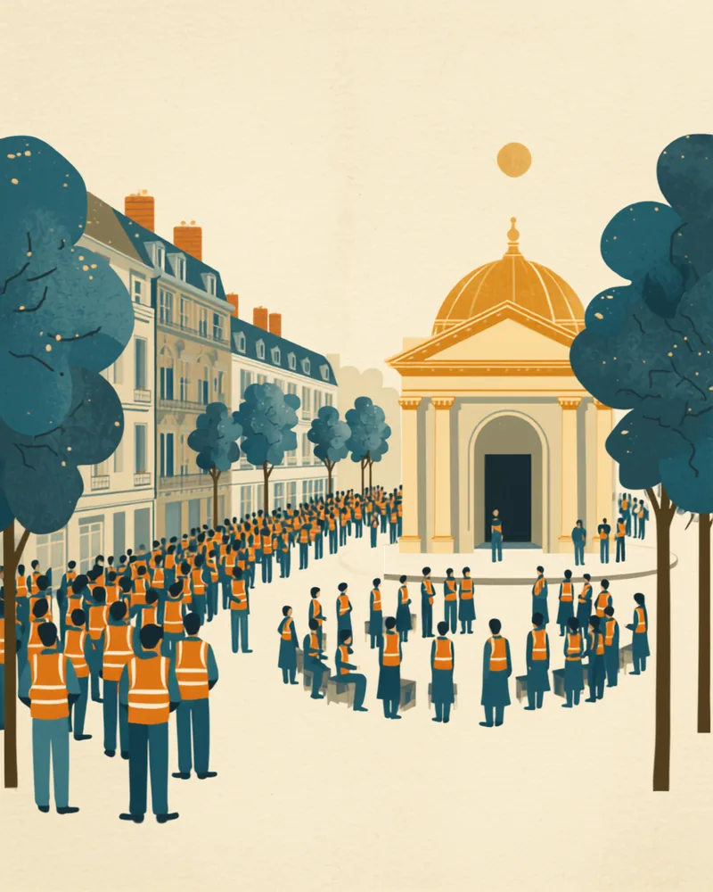
フランス|2019〜2020
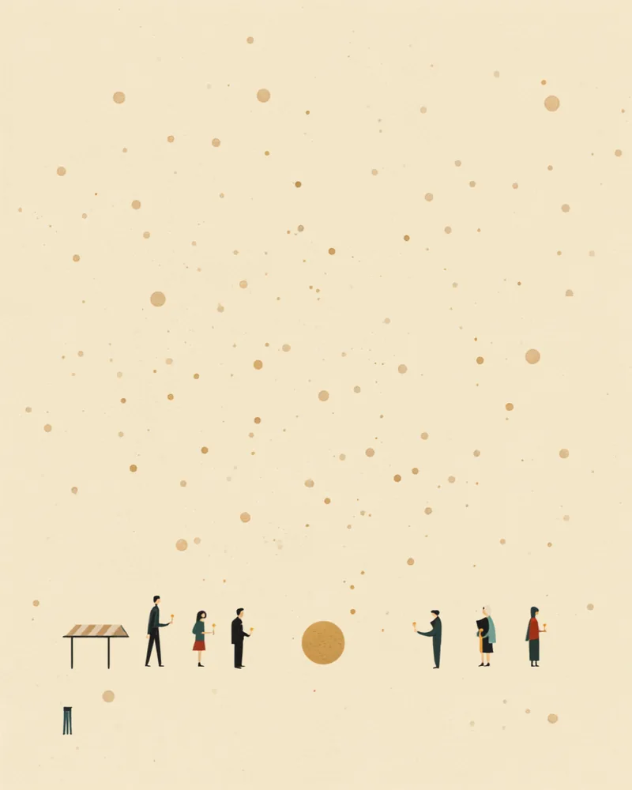
台湾|2015〜
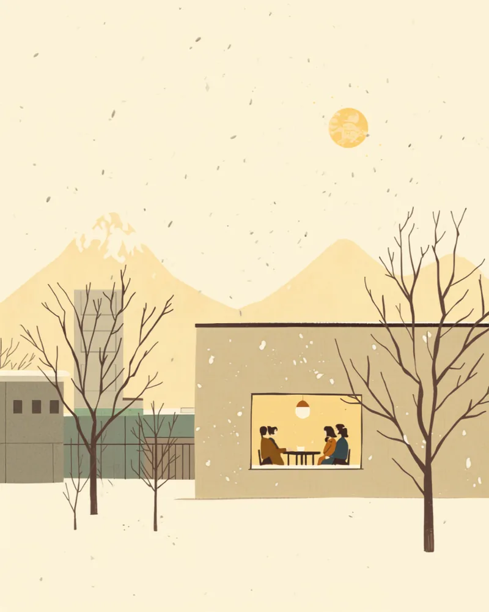
日本・札幌市ほか|2020〜
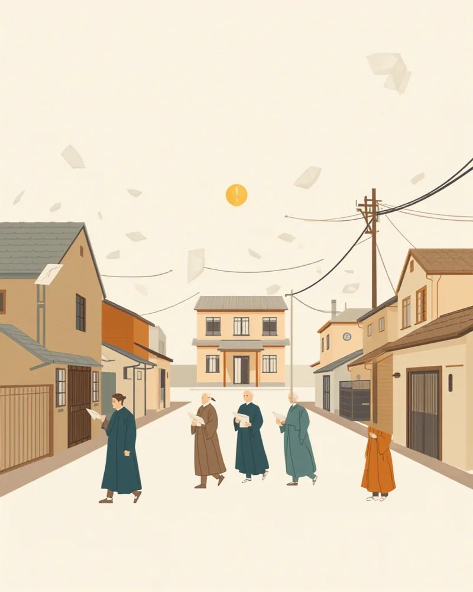
日本・各地|構想日本ほか
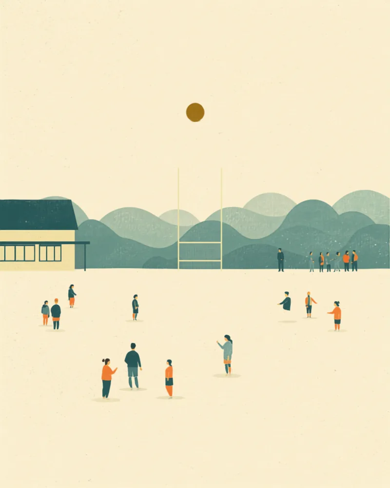
日本・茨城県神栖市|2024〜
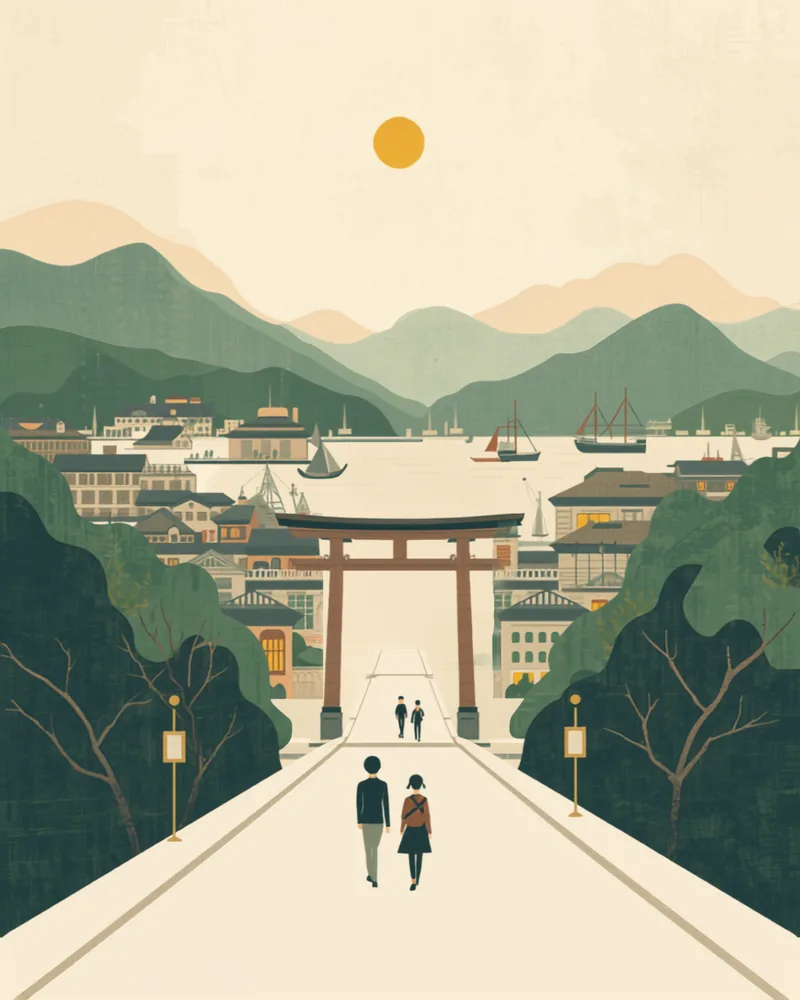
日本・神戸市|2026.9〜
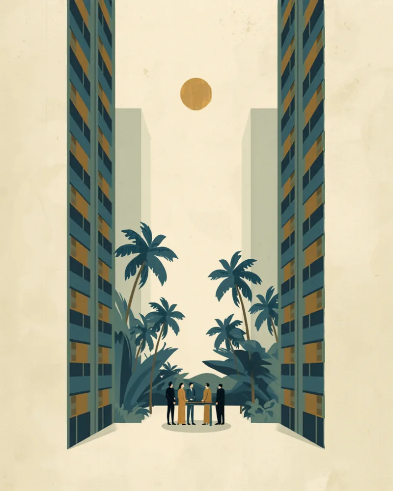
シンガポール|1960〜
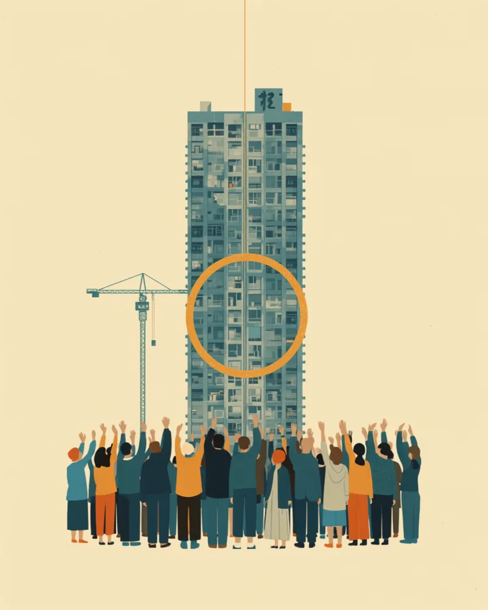
日本|2026施行
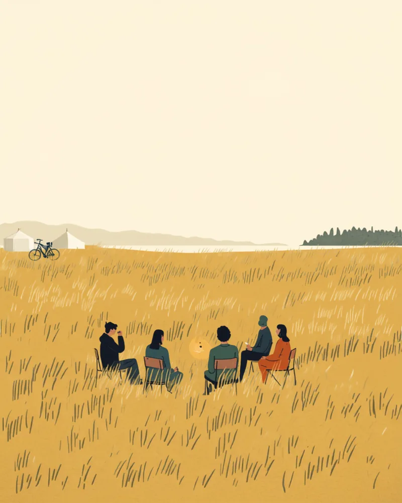
デンマーク|2010年代〜
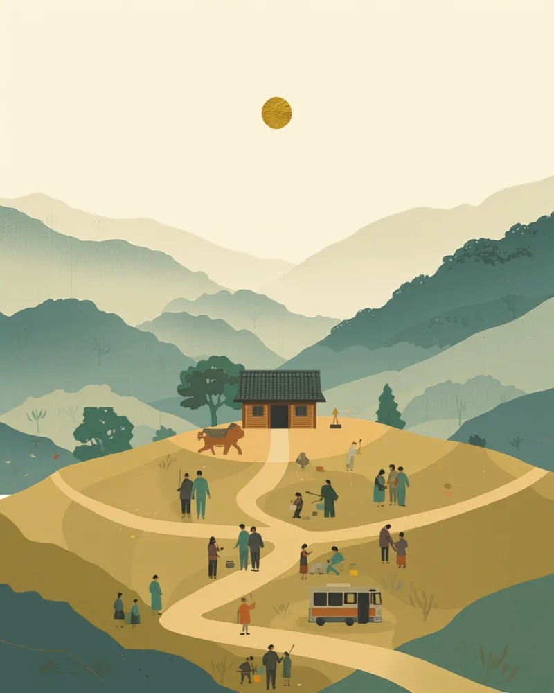
日本・島根県雲南市|2004〜
身近な組織を五条件に当てはめると、疲れの正体が見えてきます。典型的なPTA・自治会と、成功標本の対比です。
| 条件 | 典型的なPTA・自治会 | 成功している標本 |
|---|---|---|
| 籤 無作為性 | ジャンケン・消去法・前例による押し付け | くじ+属性調整で「社会の縮図」を作る |
| 応 応答義務 | アンケートは取るが、結果への応答はない | 採用/不採用と理由を返すことを事前に約束 |
| 限 役割限定 | 企画・調整・実行・責任を一括で背負う | 「選択肢の絞り込み」「優先順位づけ」に限定 |
| 脱 離脱コスト | 辞めると白い目。実質的に離脱不能 | 要件緩和・制度の肩代わりで参加が合理的になる |
| 顕 対立の可視化 | 不満は飲み会と陰口に沈殿する | 意見の分布を先に見せてから熟議に入る |
会議のやり方を変える前に、まず構造を診てみませんか。うまくいかないのは、話し方ではなく設計の問題かもしれません。
アイルランド市民議会(The Citizens' Assembly)/オストベルギー市民評議会(Bürgerdialog)/フランス気候市民会議(Convention citoyenne pour le climat)/台湾 vTaiwan・Join プラットフォーム/気候市民会議さっぽろ2020(北海道大学ほか)/構想日本「自分ごと化会議」/茨城県神栖市・神戸市の部活動地域移行(スポーツ庁 部活動改革ポータルほか)/シンガポール住宅開発庁(HDB)/改正区分所有法・マンション標準管理規約(国土交通省, 2026年施行)/島根県雲南市 地域自主組織。各標本の記述は公開情報をもとにきづきくみたて工房が要約・分析したものです。